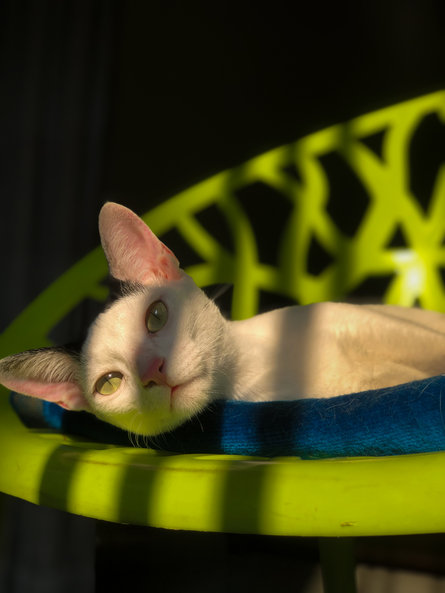

Merzer

This photograph captures a serene moment of a cat lounging on a bright green chair, bathed in warm sunlight. As a photographer, several elements come together to create a visually appealing and intimate portrait of the feline subject.
Lighting
The lighting in this photograph is natural and soft, provided by the sunlight streaming in from one side. This creates a pleasing contrast of light and shadow, enhancing the textures of the cat's fur and the chair. The sunlight illuminates the cat's face, particularly highlighting its eyes, which seem to reflect the light and draw the viewer's attention.
Composition
The composition of the photograph follows a few classic principles. The cat is placed slightly off-center, adhering to the rule of thirds, which helps create a balanced and engaging image. The use of negative space around the cat adds to the simplicity and calmness of the scene. The angle of the shot is slightly low and close, giving a sense of intimacy and connection with the subject.
Color
The color palette is both striking and harmonious. The bright green chair stands out against the darker background, creating a vivid backdrop for the cat. The cat's white and grey fur contrasts beautifully with the green, making it the focal point of the image. The subtle hints of pink in the cat's ears and nose add a gentle warmth to the composition.
Depth of Field
The photograph employs a shallow depth of field, which blurs the background and brings the cat into sharp focus. This technique isolates the subject from any potential distractions in the background, ensuring that the viewer's attention remains fixed on the cat.
Mood and Emotion
The overall mood of the photograph is tranquil and peaceful. The cat's relaxed posture, with its head resting on the chair, conveys a sense of contentment and ease. The warm lighting further enhances this serene atmosphere, making the viewer feel calm and at ease.
Texture
The textures in the photograph are well-captured, from the softness of the cat's fur to the smooth, glossy surface of the chair. The play of light and shadow accentuates these textures, adding depth and dimension to the image.
Final Thoughts
This photograph is a beautiful example of how attention to light, composition, color, and texture can come together to create a compelling and emotive image. It captures not just the physical appearance of the cat, but also a moment of tranquility and warmth.